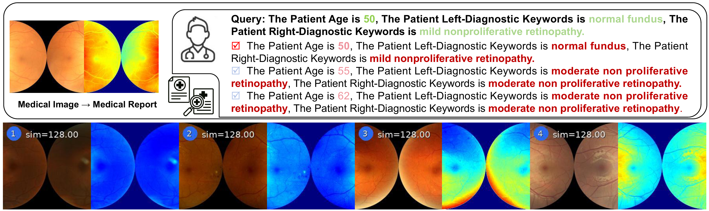

ODIR-5K
0.937
ICME 2026 · Oral
Imbalance-Aware Tri-Prompt Affinity Hashing
for Cross-Modal Medical Retrieval
Big Data Institute, Central South University
* Co-corresponding authors
Compact binary codes for retrieving medical images and clinical reports, learned from complementary image, text, and patient-context prompt views.
Patient-context prompts complement noisy reports. Mamba–Transformer blocks fuse the three views, while class-balanced learning and progressive quantization preserve disease information in binary codes.

Image-to-text mAP, averaged over 32, 64, and 128 bits. Results from Table I of the paper.
0.937
0.820
0.896
BestSecond bestmAP ↑
| Method | Image → Text | Text → Image | ||||
|---|---|---|---|---|---|---|
| 32 bits | 64 bits | 128 bits | 32 bits | 64 bits | 128 bits | |
| DCHMT | 0.502 | 0.518 | 0.522 | 0.707 | 0.711 | 0.718 |
| MITH | 0.501 | 0.506 | 0.524 | 0.432 | 0.443 | 0.436 |
| DSPH | 0.449 | 0.487 | 0.488 | 0.351 | 0.385 | 0.401 |
| CMCL | 0.531 | 0.527 | 0.542 | 0.390 | 0.393 | 0.407 |
| CICH | 0.542 | 0.528 | 0.525 | 0.813 | 0.819 | 0.931 |
| MSACH | 0.665 | 0.669 | 0.690 | 0.888 | 0.889 | 0.901 |
| TriPAH Ours | 0.936 | 0.939 | 0.937 | 0.989 | 0.971 | 0.972 |
Swipe or scroll the table to see all bit lengths.
ODIR-5K: binocular fundus images with 8 disease labels.
Table I of the paper. Best and second-best values are marked within each column; ties share the same rank. A dash indicates an unreported result.

Dataset cards and preparation guides for the three medical benchmarks.
@article{bian2026tripah,
title={TriPAH: Imbalance-Aware Tri-Prompt Affinity Hashing for Cross-Modal Medical Retrieval},
author={Bian, Jiaming and Li, Songming and Song, Yurui and Chen, Yunfei and Cao, Yichao and Long, Jun},
journal={arXiv preprint arXiv:2606.27010},
year={2026}
}{kind=link}
{kind=link}
{kind=link}
{kind=link}